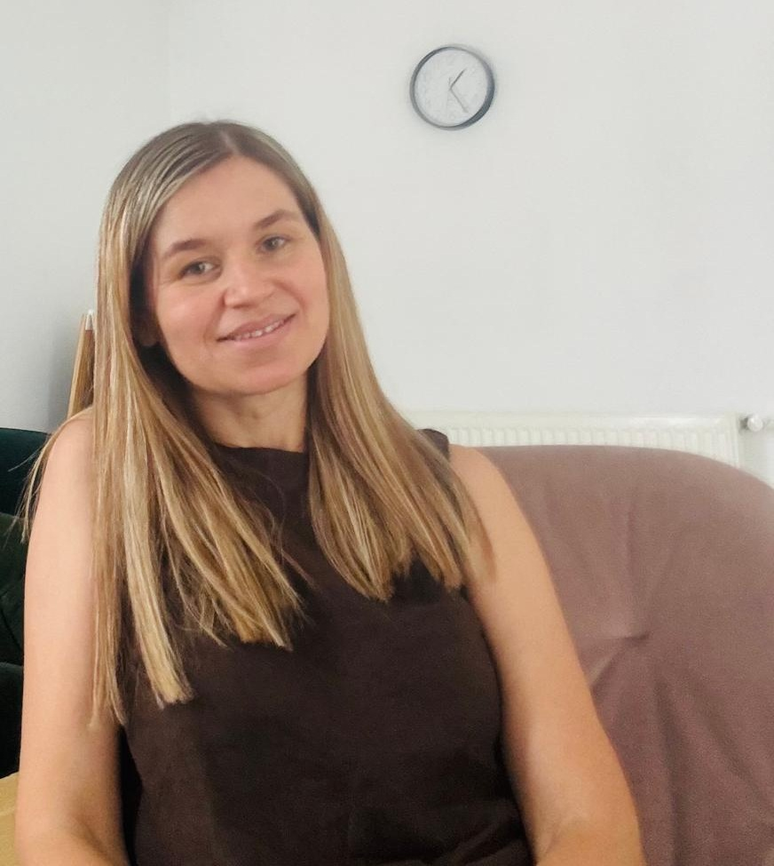
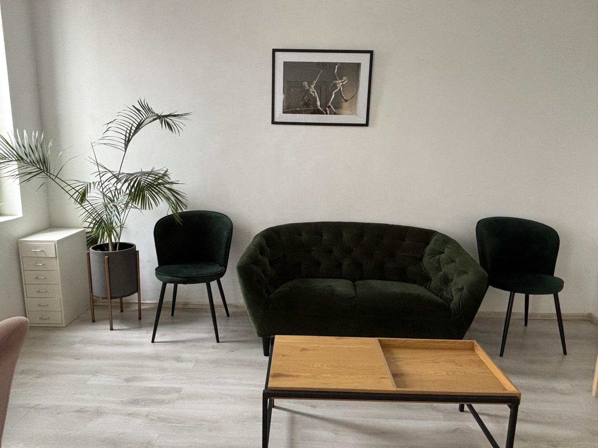

Siguranță și respect
Cred într-o relație terapeutică sigură și autentică, în respectul pentru ritmul fiecărei persoane și într-un spațiu lipsit de judecată.
Psihoterapie într-un cadru cald, relațional și non-intruziv, construit în jurul nevoilor și ritmului fiecărei persoane.
Lucrez cu adulți, copii, adolescenți, cupluri și familii, atât în cabinet, cât și online. În practica mea integrez abordarea sistemică și narativă, intervenții din terapia dialectic-comportamentală și, în lucrul cu cuplurile, repere din modelul dezvoltării Bader-Pearson.
„Îmi doresc ca persoanele care ajung în cabinetul meu să se simtă în siguranță, ascultate, respectate și însoțite cu blândețe.”
Cred în psihoterapia relațională și în puterea relațiilor sănătoase de a susține schimbarea. Acord atenție persoanei, relațiilor importante din viața sa și contextului în care dificultățile apar și se mențin.
Cred într-o relație terapeutică sigură și autentică, în respectul pentru ritmul fiecărei persoane și într-un spațiu lipsit de judecată.
Dificultățile nu sunt privite izolat. Explorăm relațiile, istoria personală, modelele de comunicare și resursele care pot susține schimbarea.
Lucrăm împreună pentru mai multă claritate, reglare emoțională, conectare și posibilitatea de a construi moduri diferite de a răspunde dificultăților.
Sunt psihoterapeut autonom, recunoscut de Colegiul Psihologilor din România. Activitatea mea profesională în domeniul psihoterapiei a început în 2012, odată cu formarea în cadrul Centrului de Psihoterapie pentru Copii, Cupluri și Familie.
Din 2015 lucrez în cadrul propriului cabinet, oferind psihoterapie copiilor, adolescenților, adulților, cuplurilor și familiilor, atât în cabinet, cât și online.
De-a lungul anilor am continuat să mă formez în domenii relevante pentru practica mea, printre care psihoterapia de cuplu, trauma, psihosexologia, infidelitatea, evaluarea clinică și intervențiile adaptate pentru copii, adolescenți și familii.
Descoperă povestea mea
Fiecare proces terapeutic este adaptat nevoilor persoanei, cuplului sau familiei și obiectivelor stabilite împreună.
Pentru adulți care se confruntă cu anxietate, stări depresive, dificultăți de reglare emoțională, relații tensionate, dificultăți de identitate sau perioade de tranziție.
Un spațiu pentru înțelegerea tiparelor relaționale, reducerea conflictelor, reconectare, clarificarea nevoilor și repararea după perioade dificile.
Pentru familii care se confruntă cu dificultăți de comunicare, conflicte, schimbări importante sau situații în care suferința unui copil este influențată de dinamica familială.
Lucrez cu copii cu vârste între 3 și 11/12 ani, din perspectivă sistemică și narativă, cu implicarea familiei acolo unde este necesar. Am experiență și în lucrul cu copii neurodivergenți și familiile lor, în special în situații care implică ADHD, autism, dificultăți de adaptare socială și reglare emoțională.
Ședințele sunt disponibile în cabinet și online, prin Zoom sau WhatsApp.

Dacă simți că ai nevoie de sprijin, poți solicita o programare sau mă poți contacta pentru mai multe informații despre procesul terapeutic.
Programează o ședință